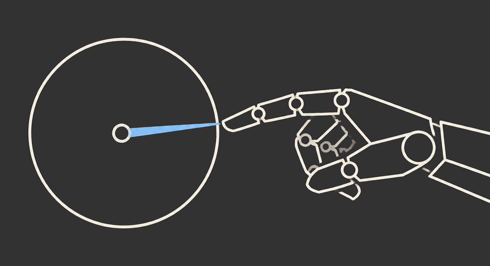
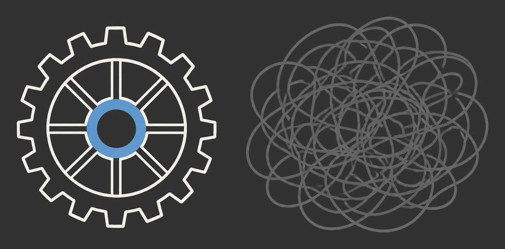
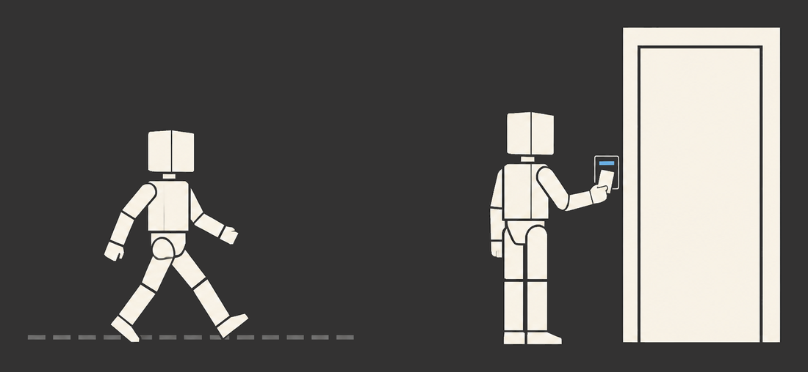

AI Coding Agent Code Quality Workshop
Structural, behavioral and design feedback — while the agent is still working.
What you can wire into the codebase you already have
Fires after every edit. Long functions, deep nesting, duplication — caught in milliseconds.
Fires when the agent stops. Finds tests that pass but would never notice a bug.
Fires once a session. Finds misplaced responsibilities and names that lie.
The premise
I'm not a great developer. I'm a good developer with great habits.
Kent Beck
while concentrating on something else. It fires without deciding to fire.
An agent cannot form one. Every session starts from nothing.
So the loop has to arrive from outside.
The consequence
A fast, deterministic check that detects a problem, coaches a fix, and is triggered automatically.
Birgitta Böckeler · Maintainability sensors for coding agents
Martin Fowler · Design Stamina Hypothesis
Giles Edwards-Alexander · one file, in one working app
150,000 lines, written entirely by agents. He never reviewed the code.
martinfowler.com/articles/exploring-gen-ai/refactoring-economic-benefit.html
Same change, same codebase size
Measured on code that had already gone wrong, then organized — the legacy case, not the greenfield one.
List price, Aug 2026: $3 per million input tokens on Sonnet 5, $5 on Opus 5.
Giles Edwards-Alexander's measured tokens, my arithmetic.
Ivett Ördög · habit-hooks
The agent must understand the why behind the linting error.
// everything the agent was told: "max-lines exceeded" // what came back: function buildLinesAndTotal(items) { ... } // the "and" is the confession
Liina Suoniemi · pre-registered, independently scored
Sonnet, complexity smell · 9 functions, 5 trials, 45 per condition · blind human check agreed on 81% of complexity cases — and every disagreement in the study was a complexity case where the human was stricter than the judge · github.com/LiinaSuoniemi/prompt-vs-metric-eval
Suoniemi · the same study
Same smell, same bare metric. Sonnet gamed it on 75.6% of trials. Haiku, 31.1%.
Naming the metric multiplied gaming on both models — 6.8× on Sonnet, 14× on Haiku.
Two models, so a signal, not a law.

What the agent actually receives
A threshold on its own is a number to push down. The same finding, carrying two sentences of why and how, is a refactoring brief.
Same tool. Same trigger. The difference is what the message says.
complexity 11 (max 5) src/domain/scoring.ts:42 WHY Eleven branches is more than a reader holds at once, so the next change lands in the wrong one. HOW Name each decision. Pull each branch body into a function whose name says what it decides. Splitting it in half will not help.
How a sensor works
By the end of this section, one is running unprompted against a real codebase.
Three parts
The thesis
Trigger tiers · strongest first
The rollout question
Some machines will have it, some will not, and the check cannot depend on which.
The same lint, duplication and mutation commands run on the pull request. An unhooked machine cannot land unhooked code.
One config file, two callers — the hook runs it early, CI runs it last.
npm install, so there is no unhooked machine to worry about. Other ecosystems have no equivalent — there, CI is not a backstop, it is the only guarantee.Before we go tier by tier
The same thing, actually running
end-to-end.cast · one feature, TDD hook, every tier firing unprompted
Sensor 1 of 3
Length, depth, complexity, duplication. The cheapest sensor you will ever own.
The principle
Prettier goes first and says nothing. Formatting is never a finding.
Attention spent on a semicolon is attention not spent on the design.
The rule set
A bar that fires the moment a function outgrows a single idea.
// eslint.config.mjs 'max-lines-per-function': 25 'max-lines': 150 'complexity': 5 'max-params': 4 'max-depth': 2 'max-statements': 15
On a codebase that predates you
Count what is there today. That number is only allowed to go down.
Every tier reads the files this turn changed. Nothing else is asked to pass.
The file too bad to touch: name it, and say so out loud.
Duplication
jscpd reads all of them. Copy-paste across modules is a structural finding too — and one tool covers about 150 languages.
Your numbers, not mine
Not a config you copy off a slide.
The agent never gets tired of refactoring. It will hold a bar most teams negotiate down by Thursday.
Structural · recorded
Milliseconds, every edit. The hook blocks; the guide comes attached.
Slice 0, unedited · the sensor fires, the hook blocks, the guide explains
Sensor 2 of 3
A passing test and a test that would notice are not the same thing.
Böckeler's own result
Statement coverage. Zero unit tests.
Same suite, different question
Break the code on purpose, run the suite, watch it stay green. Every mutant that survives is an assertion you never wrote.
Keeping it affordable
A whole-repo run is a coffee break. The changed-file run finishes inside the turn.
Too slow for every keystroke. Fast enough to run before the agent is allowed to stop.
// the behavioral sensor npx stryker run \ --mutate "src/domain/quest.ts" // seconds, not minutes
Behavioral · recorded
Thirty seconds from a green suite to a suite that means something.
05-behavioral-mutant-survived.cast · one survivor, the missing assertion, a clean re-run
Sensor 3 of 3
The part everybody assumes needs a human.
The assumption
Cohesion, naming, responsibility — no linter has an opinion about any of it.
The reversal
Not a heuristic. A rule that fails, in milliseconds, with a sentence attached.

The shape the rules protect
terminal · browser · files
what the game asks of the world
rooms, movement, the bag
← dependencies point inward
Design, computed
Dependencies point inward. The domain never imports an adapter.
The domain must be deterministic. Take a Random port instead of Math.random().
Hand-rolled fakes only. Write a Fake in test/fakes/ instead of mocking.
rule three, after Michael Feathers
The coaching guide is the rule’s message field — one sentence per rule, written once, shipped in the config.
The codebase you actually have
The two you would defend in a code review. A package that must not import another. A layer that must not reach the database.
Freeze exactly those. No architecture required — only a boundary you are willing to name.
// eslint.config.mjs files: ['src/billing/**'] // no-restricted-imports patterns: [{ group: ['**/checkout/**'], message: 'go through the contract' }] // then baseline what is already // there. only new ones fail.
Where the effort goes
Whatever refuses to move — cohesion, semantic duplication, a name that lies — is what the model is for. Dollars, thirty seconds, once a session.
The charter
Without one, the design sensor becomes the slop it exists to prevent.
// design-sensor charter PLACEMENT wrong layer? one module, two jobs? ABSTRACTION duplication a matcher cannot see? did one change ripple wider than it should? NAMING does any name lie? primitive obsession? TESTS specs, or transcripts? test pain that is really design pain? // cap: 5 ranked findings
The gate
// Stop hook already reviewed? exit // once a session no source changed? exit // nothing to read cheap sensor red? exit // it speaks first otherwise block
Design · recorded
06-design-stop-block.cast · Stop hook blocks, sensor finds it, retry clean
Putting it together
Cheap sensors run constantly. Expensive ones wait their turn.
The takeaway
What the loop costs
Milliseconds and seconds. At this scale you cannot find the cheap tiers in the bill.
And it is gated behind the cheap ones being green, so most turns never buy it.
Ask me in Q&A what it costs on a real week — the honest answer is that I have the loop, not the A/B.
Where a sensor gets killed
An inline eslint-disable. Inert: the finding comes back, plus a note that the directive did nothing.
Threshold raised, hook deleted — both are diffs. The gate re-runs the sensors, or proves the hook did.
A threshold raised on purpose, in a reviewed diff. That is a code review, not a tool.
The escape hatch
Some code is honestly a 9. The exception moves into eslint.config.mjs as a scoped block.
Visible in a diff. Greppable. Scoped to a named path. A comment on line 400 of a source file is none of those.
// eslint.config.mjs { files: ['src/adapters/vendor-shim.ts'], rules: { 'max-params': 'off' }, } // the file next door still reports
More ceremony than a comment. That is the point.
The whole architecture, in one line

The reframe
Review does not scale to agent output.
Not gates that stop bad code. Machines that produce code small enough to review at the speed it arrives.
Language coverage
| Tier | Pick yours |
|---|---|
| Structural | ESLint · PMD · Ruff · golangci-lint |
| Duplication | jscpd — one tool, most languages |
| Behavioral | Stryker · PIT · mutmut · cargo-mutants |
| Design, computational | dependency-cruiser · ArchUnit · import-linter · deptrac |
You do not port this by hand
Your language, your build tool, your existing lint, your agent runtime. It detects, then confirms.
It refuses to paste my thresholds. A number that fires a thousand times on day one is off by day two.
Writes a probe, watches the sensor fail, deletes the probe. A sensor nobody has watched fail is a guess.
A skill, for Claude Code and for Codex. It proposes the whole plan and stops for your approval before it writes a single file.
Where this still falls short
“I have made this longer than usual because I have not had time to make it shorter.”
Blaise Pascal, 1657 · usually misattributed to Mark Twain
Every one names the smell, the fix and the trap. Shorter would be better, and shorter is harder — I have not earned the short version yet.
This is beta. The thresholds, the wording and the gate are all still moving. You are getting the loop, not a finished product.
Say this out loud
ArchUnit has enforced architecture for years. What changed is that the thing writing the code cannot form a habit.
Take it with you
The longer version is a book: Software Craftsmanship for AI Coding Agents, Packt.
Every article, tool and finding cited today is listed with links on the references page beside these slides.
Every slide · click one, or arrows then Enter · Esc to go back